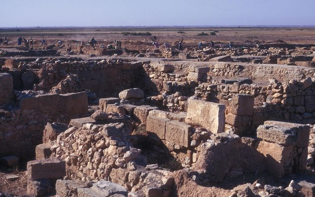
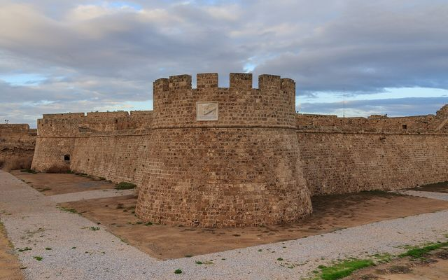

طبقات قبرص: من العصر البرونزي إلى العثمانيين. في شمال قبرص، عند ملتقى طرق شرق المتوسط، يتكشف تاريخ أربعة آلاف عام من تجارة النحاس إلى الكاتدرائيات القوطية. بفضل النحاس الذي ربما أعطاها اسمها، كانت الجزيرة في العصر البرونزي مركزًا لتجارة شرق المتوسط، وإنكومي قرب توزلا مدينة مهمة من تلك الحقبة. وكانت سلاميس أقوى ممالك المدن في العصر الحديدي، ومن آثار هذه الحقبة دفن الخيول والعربات في المقابر الملكية ومسرح سولي وقصر فوني على تلته. ويروي الدير الذي يحمل اسم الرسول برنابا السلاميسي وبازيليكا آيا ترياس في كارباز قصة المسيحية المبكرة. وفي العصر البيزنطي بُنيت قلاع القديس هيلاريون وبوفافنتو وكانتارا في جبال بشبارماك (كيرينيا). وترك اللوزينيان، الذين حكموا من 1192، أجمل الأعمال القوطية في شرق المتوسط: دير بيلاپايس وكاتدرائيتي القديسة صوفيا في نيقوسيا (جامع السليمية اليوم) والقديس نيقولاوس في فاماغوستا (جامع لالا مصطفى باشا اليوم). وعزّز البنادقة، الذين استولوا على الجزيرة عام 1489، قلعة كيرينيا وأسوار فاماغوستا في مواجهة المدافع. ومع الفتح العثماني عام 1571 تحولت الكاتدرائيات إلى جوامع، وانضمت مبانٍ مثل الخان الكبير والتكية المولوية إلى نسيج نيقوسيا. أما حطام السفينة من القرن الرابع قبل الميلاد في قلعة كيرينيا فرمز لتاريخ الجزيرة المرتبط بالبحر.
في شمال قبرص، عند ملتقى طرق شرق المتوسط، يتكشف تاريخ أربعة آلاف عام من تجارة النحاس إلى الكاتدرائيات القوطية.
بفضل النحاس الذي ربما أعطاها اسمها، كانت الجزيرة في العصر البرونزي مركزًا لتجارة شرق المتوسط، وإنكومي قرب توزلا مدينة مهمة من تلك الحقبة. وكانت سلاميس أقوى ممالك المدن في العصر الحديدي، ومن آثار هذه الحقبة دفن الخيول والعربات في المقابر الملكية ومسرح سولي وقصر فوني على تلته.
ويروي الدير الذي يحمل اسم الرسول برنابا السلاميسي وبازيليكا آيا ترياس في كارباز قصة المسيحية المبكرة. وفي العصر البيزنطي بُنيت قلاع القديس هيلاريون وبوفافنتو وكانتارا في جبال بشبارماك (كيرينيا). وترك اللوزينيان، الذين حكموا من 1192، أجمل الأعمال القوطية في شرق المتوسط: دير بيلاپايس وكاتدرائيتي القديسة صوفيا في نيقوسيا (جامع السليمية اليوم) والقديس نيقولاوس في فاماغوستا (جامع لالا مصطفى باشا اليوم).
وعزّز البنادقة، الذين استولوا على الجزيرة عام 1489، قلعة كيرينيا وأسوار فاماغوستا في مواجهة المدافع. ومع الفتح العثماني عام 1571 تحولت الكاتدرائيات إلى جوامع، وانضمت مبانٍ مثل الخان الكبير والتكية المولوية إلى نسيج نيقوسيا. أما حطام السفينة من القرن الرابع قبل الميلاد في قلعة كيرينيا فرمز لتاريخ الجزيرة المرتبط بالبحر.
أين تشاهد هذا العصر

موقع إنكومي (ألاسيا) الأثريغازي ماغوسا (فاماغوستا) موقع سلاميس الأثريغازي ماغوسا (فاماغوستا)متحف وموقع المقابر الملكيةغازي ماغوسا (فاماغوستا)
موقع سلاميس الأثريغازي ماغوسا (فاماغوستا)متحف وموقع المقابر الملكيةغازي ماغوسا (فاماغوستا) موقع سولي الأثريليفكه (ليفكا)
موقع سولي الأثريليفكه (ليفكا) قصر فونيليفكه (ليفكا)
قصر فونيليفكه (ليفكا) دير القديس برناباغازي ماغوسا (فاماغوستا)بازيليكا آيا ترياسإسكله (تريكومو)
دير القديس برناباغازي ماغوسا (فاماغوستا)بازيليكا آيا ترياسإسكله (تريكومو) كنيسة أنتيفونيتيسغيرنه (كيرينيا)
كنيسة أنتيفونيتيسغيرنه (كيرينيا) قلعة القديس هيلاريونغيرنه (كيرينيا)
قلعة القديس هيلاريونغيرنه (كيرينيا) قلعة بوفافنتوغيرنه (كيرينيا)
قلعة بوفافنتوغيرنه (كيرينيا) قلعة كانتاراإسكله (تريكومو)
قلعة كانتاراإسكله (تريكومو) دير بيلاپايسغيرنه (كيرينيا)
دير بيلاپايسغيرنه (كيرينيا) جامع السليميةليفكوشا (نيقوسيا)
جامع السليميةليفكوشا (نيقوسيا) جامع لالا مصطفى باشاغازي ماغوسا (فاماغوستا)
جامع لالا مصطفى باشاغازي ماغوسا (فاماغوستا)
قلعة عطيلغازي ماغوسا (فاماغوستا) قلعة كيرينيا ومتحف حطام السفينةغيرنه (كيرينيا)
قلعة كيرينيا ومتحف حطام السفينةغيرنه (كيرينيا) الخان الكبيرليفكوشا (نيقوسيا)
الخان الكبيرليفكوشا (نيقوسيا) متحف التكية المولويةليفكوشا (نيقوسيا)
متحف التكية المولويةليفكوشا (نيقوسيا)🎓 اختبر معلوماتك
1. أي معدن كان مصدر ثراء قبرص في العصر البرونزي؟
2. أي كاتدرائية كان جامع السليمية في نيقوسيا في الأصل؟
3. منذ أي عام حكم اللوزينيان الجزيرة؟
4. إلى أي حقبة تعود السفينة الغارقة في قلعة كيرينيا؟